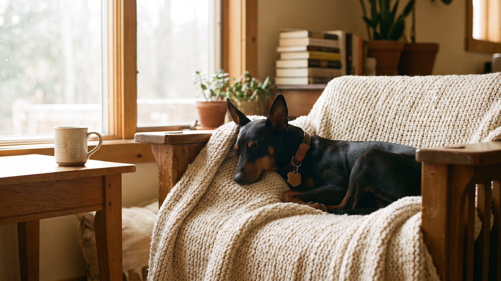

В Манчестере XIX века за ночь собака этой породы убивала до сотни крыс на арене. Сегодня манчестерский терьер живёт в городских квартирах, но охотничья заряженность никуда не делась. Порода подходит тем, кто готов к двум полноценным прогулкам в день и хочет умную, преданную собаку без длинной шерсти и лишней суеты в уходе.
🐾 У вас манчестерский терьер?
AnimaLife соберёт уход под породу: к каким болезням есть склонность, что проверять по возрасту, чем кормить и когда пора к врачу. Бесплатно, прямо в мессенджере.
Собрать план ухода → Собрать в MAX →
У вас iPhone? AnimaLife есть в App Store
В Англии XIX века крысы были настоящей бедой: грызуны разносили болезни, портили склады, и кошки с этим не справлялись. Заводчик Джон Хулм из Манчестера скрестил белых старинных терьеров с уиппетами: борзыми, которые развивают около 60 км/ч. Получилась собака с нюхом и злобой к грызунам терьера и скоростью борзой. В 1886 году породу официально зарегистрировали. Манчестерские терьеры участвовали в соревнованиях по крысиной травле, а после запрета этих зрелищ перешли в городские дома как компаньоны. Характерный чёрно-подпалый окрас и подтянутое сложение порода сохранила до сих пор.
Манчестерский терьер умный и наблюдательный. Он быстро учится, но с типично терьерным упрямством: если собаке неинтересно, занятие затянется. Занятия лучше короткие, с переменой задач. С хозяином пёс привязчив и внимателен к его настроению. Незнакомцев поначалу оценивает, но открытой агрессии без причины не проявляет. Охотничий инстинкт сильный: белок, кошек и мелких грызунов на прогулке не игнорирует. С домашними кошками уживается, если познакомился щенком.
С детьми ладит при уважительном обращении. Маленьких детей, которые хватают или тянут за уши, терпит хуже. Для породы с охотничьим происхождением такая реакция закономерна.
Порода вполне квартирная при условии двух полноценных прогулок в день по 40–60 минут. Просто дать выгуляться мало: манчестерскому терьеру нужен бег, апортировка или нюховые игры. Без разрядки он грызёт вещи и скулит. Поздней осенью и зимой шерсть без подшёрстка не греет: собака мёрзнет, так что попона или комбинезон нужны уже при температуре ниже +5 °C. Это стандартный расход для породы, а не прихоть.
Шерсть гладкая, короткая, практически не линяет. Расчёсывать её не нужно: достаточно протирать раз в неделю влажной рукавичкой или мягкой тканью. Мыть по мере загрязнения. Уши чистят по мере необходимости, зубы чистят раз в неделю, когти подстригают раз в три-четыре недели.
Порода в целом крепкая, живёт 13–16 лет. Из наследственных рисков встречаются болезнь фон Виллебранда (кровь хуже сворачивается), вывих коленной чашечки и проблемы со зрением. Перед покупкой щенка просите у заводчика результаты генетического тестирования родителей. Здоровая взрослая собака нуждается в плановом осмотре у ветеринара раз в год.
🐾 Ваш питомец — манчестерский терьер?
Заведите профиль в AnimaLife: приложение запомнит породу, возраст и вес и будет подсказывать по уходу именно для неё. Вопросы AI-ветеринару — круглосуточно и бесплатно.
Завести профиль → Завести в MAX →
У вас iPhone? AnimaLife есть в App Store
🐾 Понравился разбор?
Подпишитесь на канал — каждый день разбираем по одному тревожному симптому у кошек и собак: что в пределах нормы, а когда пора к врачу. Подпишитесь, чтобы не пропустить разбор, который может спасти здоровье вашего питомца.
Материал носит информационный характер и не заменяет очную консультацию ветеринара.